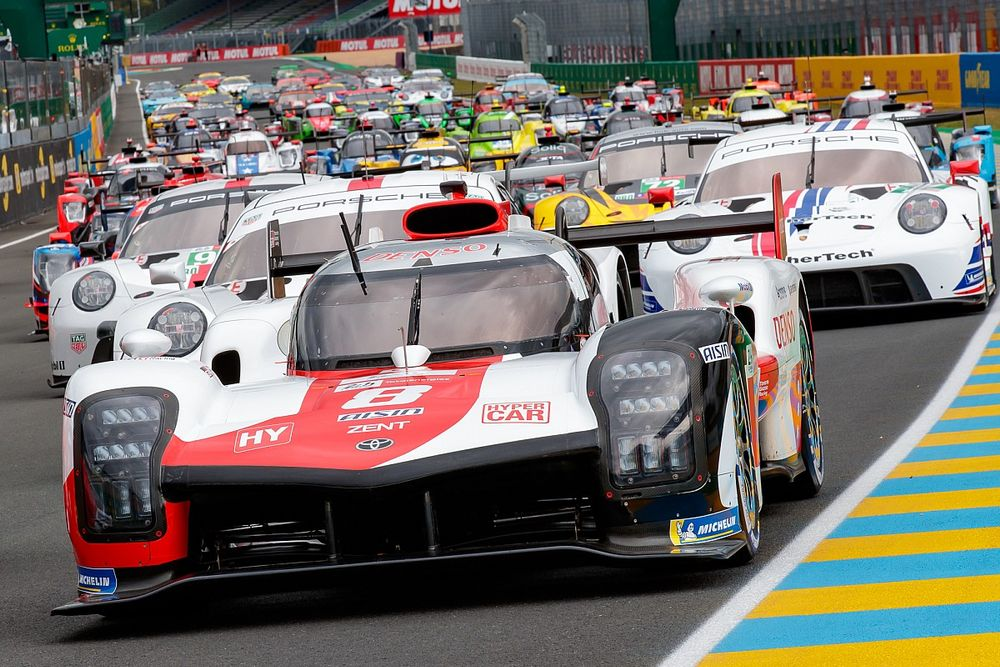
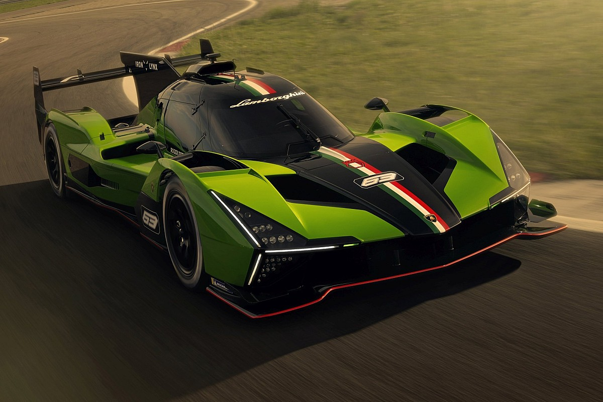
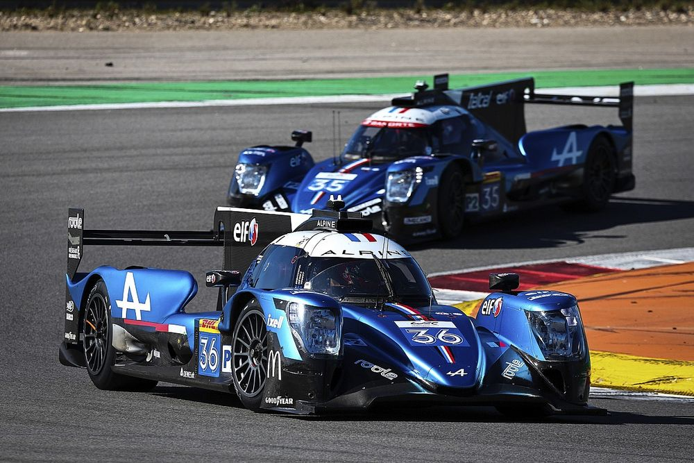
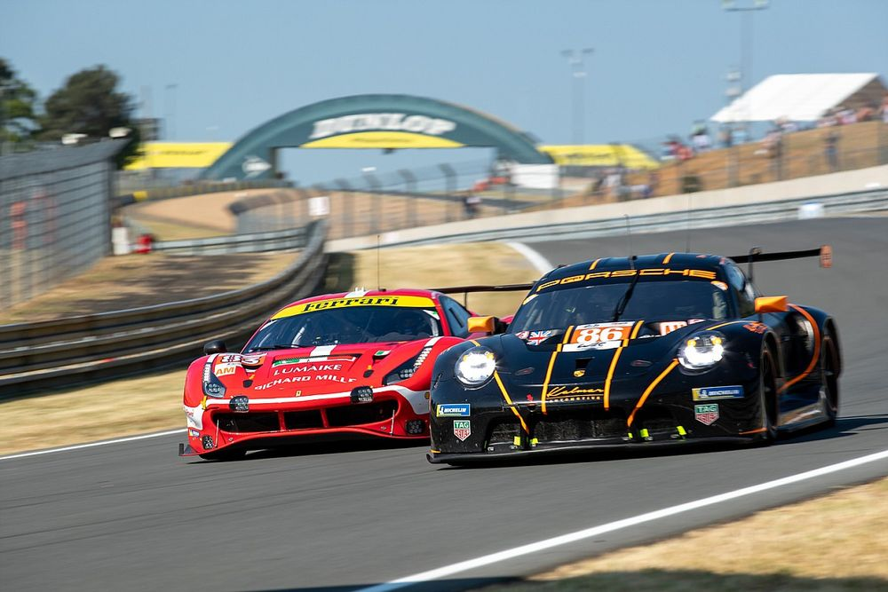

As 24 Horas de Le Mans são uma das corridas de automobilismo mais famosas e prestigiadas do mundo. Realizada
anualmente desde 1923 na cidade de Le Mans, na França, esta prova é conhecida por sua duração incomum e desafios
únicos que impõe aos pilotos, equipes e aos próprios carros.
Duração: Como o nome sugere, a corrida dura 24 horas consecutivas, começando ao
meio-dia de sábado e terminando ao meio-dia de domingo.
Circuito: O circuito de Le Mans é uma combinação de pistas permanentes e estradas públicas
fechadas temporariamente para o evento. Tem cerca de 13,6 km de extensão, sendo famoso pelos trechos de alta
velocidade como a reta Mulsanne, onde os carros atingem velocidades superiores a 300 km/h.
Equipes e Pilotos: A corrida atrai equipes de fábrica das principais montadoras de carros
esportivos, além de equipes independentes. Cada carro é pilotado por uma equipe de dois a três pilotos, que
se alternam ao volante durante a corrida.

Categorias
LMP1 (Protótipos de Le Mans): Carros de alto desempenho, projetados especificamente para
corridas de resistência. São os mais rápidos e tecnologicamente avançados, com motores híbridos e
aerodinâmica sofisticada.
LMP2: Protótipos menos potentes que os LMP1, mas ainda assim muito rápidos e com um custo
mais acessível para equipes independentes.
GTE-Pro e GTE-Am: Carros de corrida baseados em modelos de produção (como Ferrari, Porsche,
Ford, etc.), divididos entre equipes profissionais (Pro) e equipes amadoras (Am).



Estratégia e Desgaste
Estratégia:Gerenciar o desgaste dos pneus, o consumo de combustível e a manutenção mecânica
ao
longo das 24 horas é crucial. As equipes precisam decidir quando trocar pilotos, pneus e até mesmo reparar
danos
sem perder muito tempo na pista.
Desafios: A corrida ocorre em todas as condições meteorológicas possíveis, do sol escaldante
ao frio da noite. A iluminação é uma questão crítica durante a noite, com os pilotos confiando em faróis
potentes para guiar seus carros em altas velocidades.